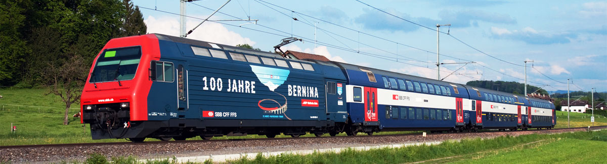

Centenario Bernina Express
Il Bernina Express, nel 2010, ha raggiunto il prestigioso traguardo dei cento anni di attività e la Ferrovia Retica, per celebrare questa importante ricorrenza, ha deciso di organizzare tutta una serie di eventi e manifestazioni mirate a dare un nuovo impulso alla tratta Tirano–Saint Moritz, dichiarata due anni prima come Patrimonio Mondiale dell’Umanità.
Per il centenario del Trenino del Bernina venne anche creato un apposito logo che rappresentasse, in maniera molto stilizzata, il viadotto elicoidale di Brusio. Questo riprende la sagoma del ponte a nove archi a forma di spirale che si sviluppa a cielo aperto vincendo il dislivello naturale e inserendosi elegantemente nel paesaggio circostante, caratterizzato principalmente da pietraie e castagni. Questo elemento costruttivo particolare, nonostante non sia una novità assoluta dal punto di vista tecnico, è riuscito a conquistare in breve tempo una notorietà internazionale, diventando così uno dei simboli più importanti e riconosciuti del Bernina Express.
Una delle caratteristiche principali del Bernina Express è la sua attività che copre un arco temporale lungo tutto l’anno, per questo motivo la Ferrovia Retica decise di basare e suddividere i festeggiamenti su quattro eventi principali, uno per ogni stagione, così da ricordare a tutti i viaggiatori che il Bernina Express può essere utilizzato in qualsiasi giorno, con qualsiasi tempo, neve compresa.
Gli eventi principali del Centenario del Bernina Express
In Inverno, i festeggiamenti si concentrarono a Saint Moritz. Il via ufficiale alle celebrazioni venne dato direttamente in stazione, dove il possente spartineve a vapore del 1912 aprì la “Porta Bernina” scavando uno spesso muro composto da neve e ghiaccio e posto su uno dei binari. Una volta iniziati ufficialmente i festeggiamenti, si passò all’inaugurazione della mostra UNESCO (sempre alla stazione di Saint Moritz), con il conseguente trasferimento a bordo del Bernina Express. Durante il viaggio, fra i numerosi spettacoli pirotecnici sparsi lungo il percorso, si inaugurò il Museo del ghiaccio a Diavolezza e raggiunta la fermata Alp Grum era possibile partecipare ad una escursione con sosta nell’accogliente baita-ristorante con vista mozzafiato sull’intera Val Poschiavo.
Con l’arrivo della Primavera, e la bella stagione, nelle date dell’8 e del 9 Maggio venne anche aperta la Porta Bernina a Tirano. Sempre negli stessi giorni numerose sono state le manifestazioni collegate, fra cui si può ricordare principalmente l’inaugurazione del sentiero UNESCO Tirano-Thusis (lungo circa 120 km), la presentazione delle nuove carrozze Allegra ed infine venne organizzata una festa cittadina con mostre ed esposizioni dal titolo “storia e cultura” tra Tirano, la Val Poschiavo e l’Engadina.
In Estate, invece, la Ferrovia retica decise di concentrarsi sulla zona che ha dato vita al logo ufficiale del centenario, rendendola la protagonista principale; il viadotto elicoidale di Brusio, infatti, venne allestito in maniera scenografica così da poter ospitare la torta di compleanno, il fuoco, le luci e la musica. Contemporaneamente ad Alp Grum, venne inaugurata l’installazione sonora denominata “Progetto Ark Sound”, una scultura galleggiante sul Lago Bianco, opera di Daniele Ligari, che interagendo con le onde del lago e col vento era capace di riprodurre suoni e movimenti di ogni tipo, con lo scopo di gettare ponti non ignorabili tra culture diverse, tra due mondi, tra il nord e il sud.
Infine, durante l’autunno, a Pontresina il 18 e il 19 settembre vennero organizzate diverse manifestazioni, fra cui la festa popolare, la camminata d’incontro Svizzera-Italia e un seminario UNESCO con vari responsabili dei siti e delle attrazioni sul punto più alto della Ferrovia Retica.
Questi ovviamente furono gli eventi di maggior richiamo, ma per tutto l’anno si sono susseguite manifestazioni e viaggi a bordo di carrozze originali con diversi accompagnatori, come il Treno del giubileo (chiamato “pullman express”) o il “coccodrillo” restaurato; inoltre per tutto il periodo vennero attivate promozioni a prezzi speciali per famiglie, mostre, cucina tipica, pacchetti speciali. Come ulteriore riconoscimento di questo incredibile traguardo, anche il Giro d’Italia si fermò a fare tappa per festeggiare il Centenario del Bernina Express. Gli eventi organizzati in occasione del centenario sono stati sicuramente straordinari ma già di per sé un viaggio sul Bernina Express è un momento spettacolare.
Chi si è perso i festeggiamenti per il centenario, non può certo mancare partecipando ad uno dei viaggi organizzati al Bernina Express o pianificare uno dei tanti itinerari a disposizione.